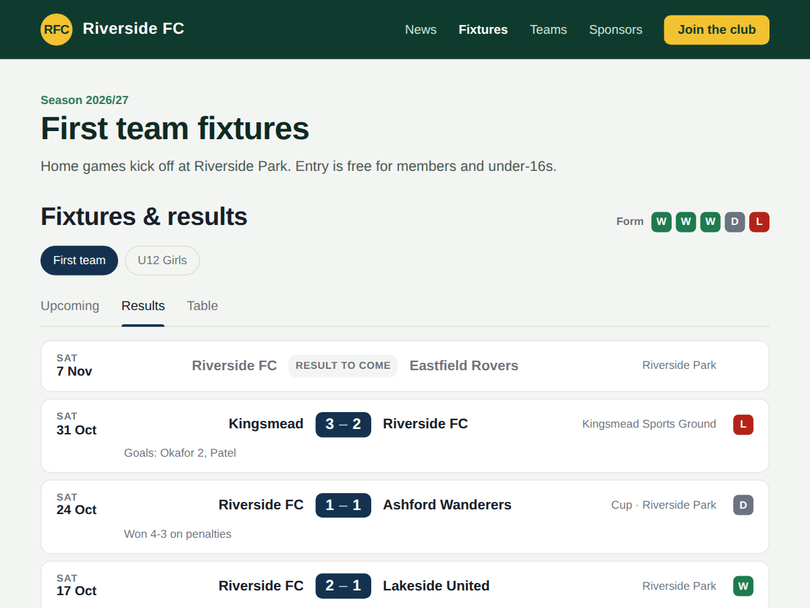

Fixtures
Fixtures, results and league table from events
- Games come from your events, no retyping
- Type a score once, results update by themselves
- League table with your own points (Premium)
- Several teams, form guide and scorers (Premium)

What it does
Fixtures puts your club's games on your site as a fixtures list, a results list and a league table. The games come from your events, so you add each game once, as an event called "Riverside vs Northgate", and the widget lists it under Upcoming with the date, kick-off time and venue.
When the game is over it moves to Results by itself. Open the app's dashboard page, type the score once, and it shows on your site with a win, draw or loss badge for your team. Postponed and cancelled games can be marked too.
Put each team's games in its own event category, such as "First team" or "U10 Girls", and pick the category in the widget's settings. Colours, font and heading match your site, and it reads well on phones.
The free plan shows one team's upcoming games and its last 10 results, with a small credit link under the widget. Premium adds a league table worked out from your scores, with the points you choose for a win, draw and loss. It also shows several teams as tabs and up to 50 games per tab, plus a form guide of the last five games, a card for the next game and a line for scorers or player of the match. You can import old results from a CSV file, and the credit link goes away.
Price
Free
- One team's upcoming games
- Last 10 results with scores
- Your heading, colours and font
- Small credit link
Premium
$5/month, 20% off yearly ($4/month billed yearly)
- League table with your points rules
- Several teams as tabs, up to 50 games
- Form guide, next game card, scorers line
- Import old results, remove the credit link